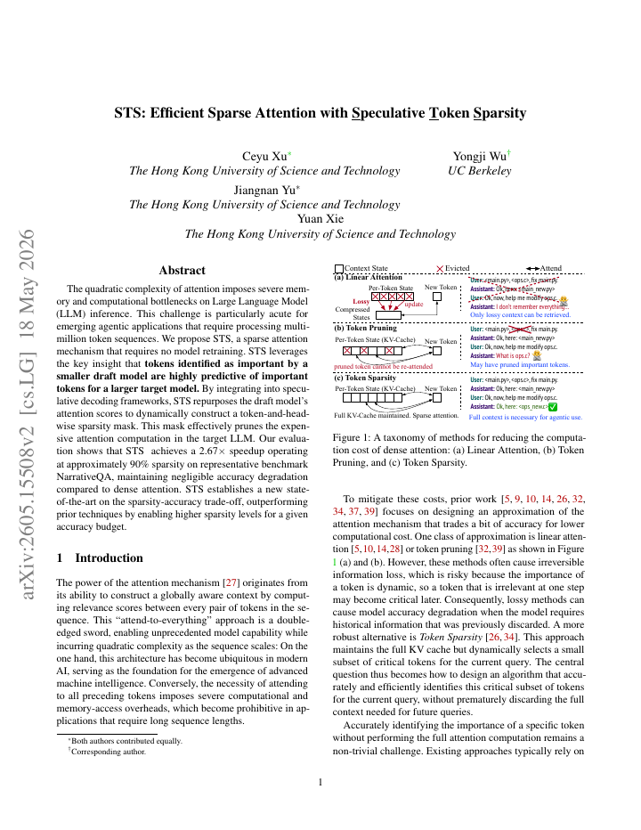
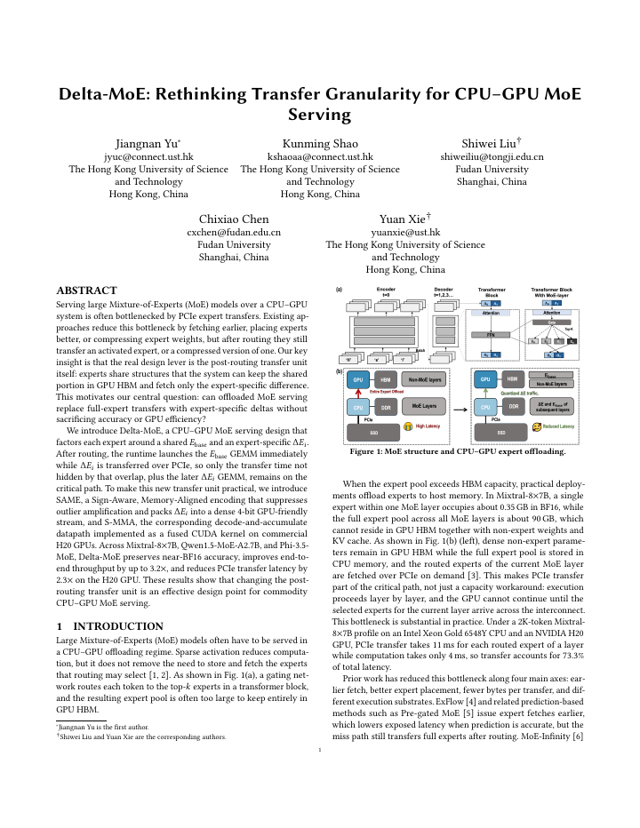
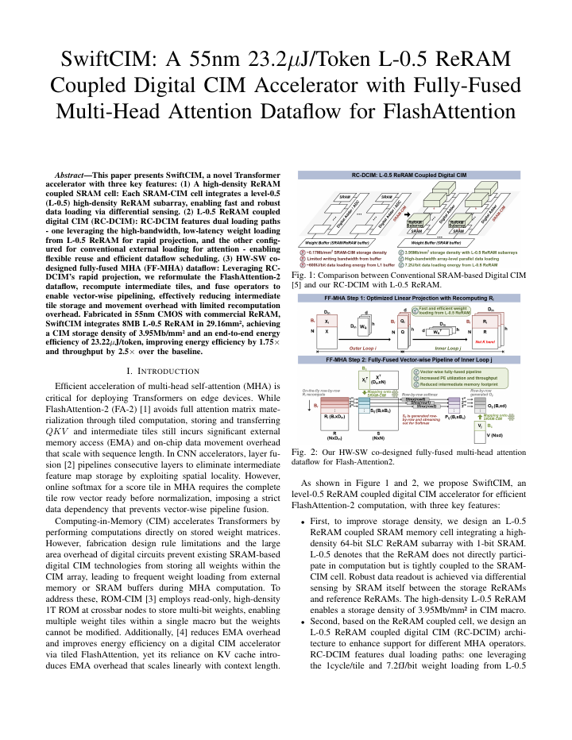
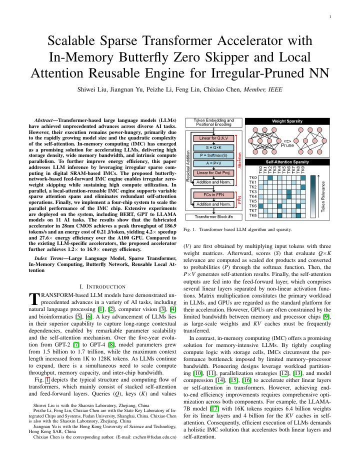
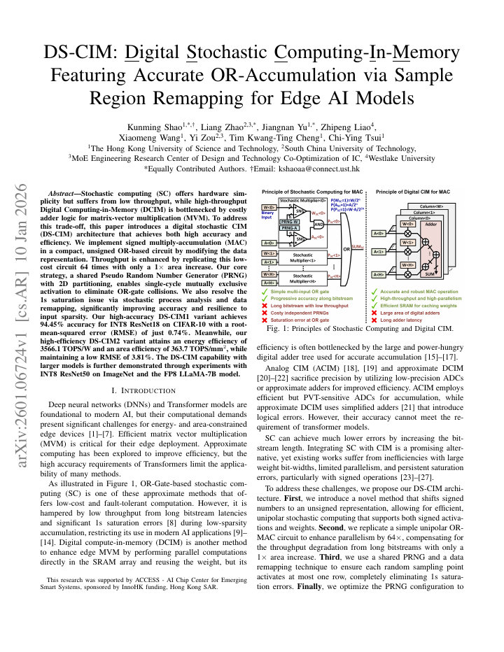
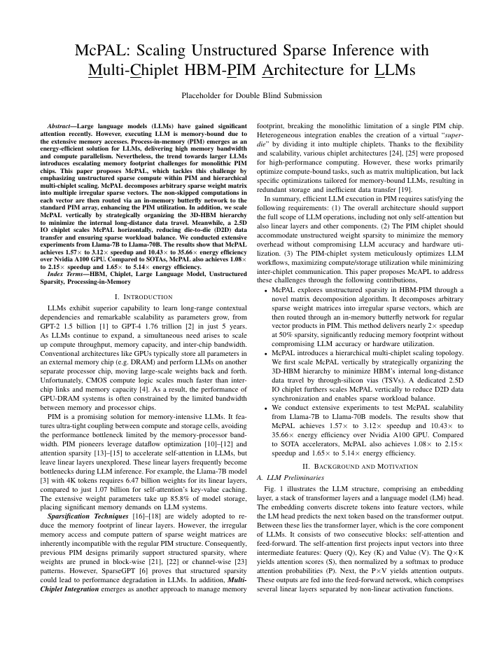
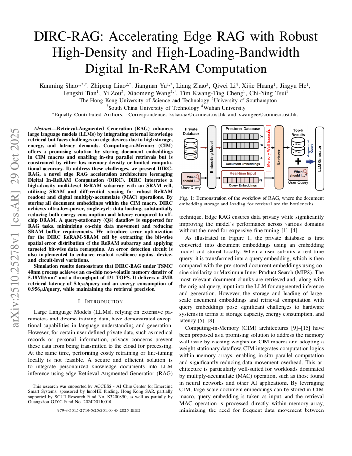
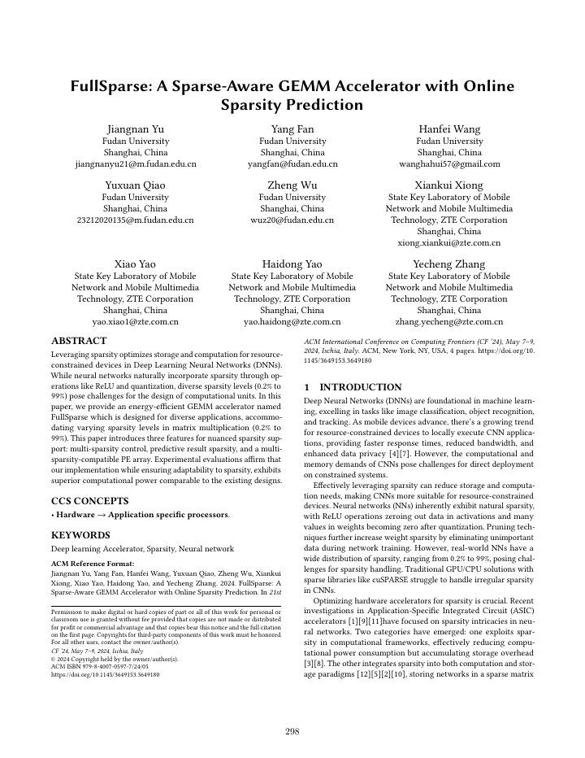
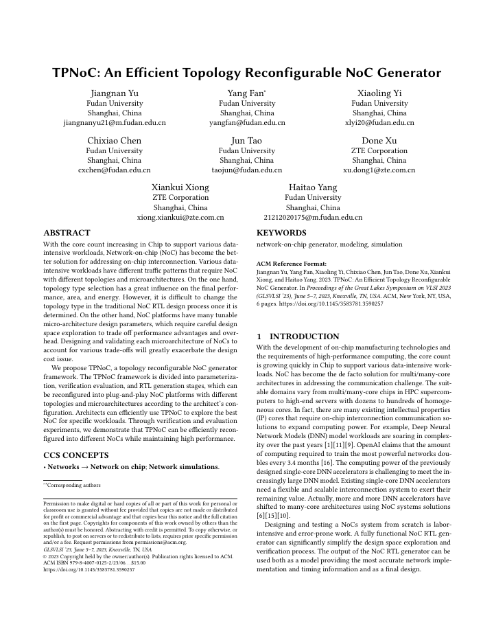
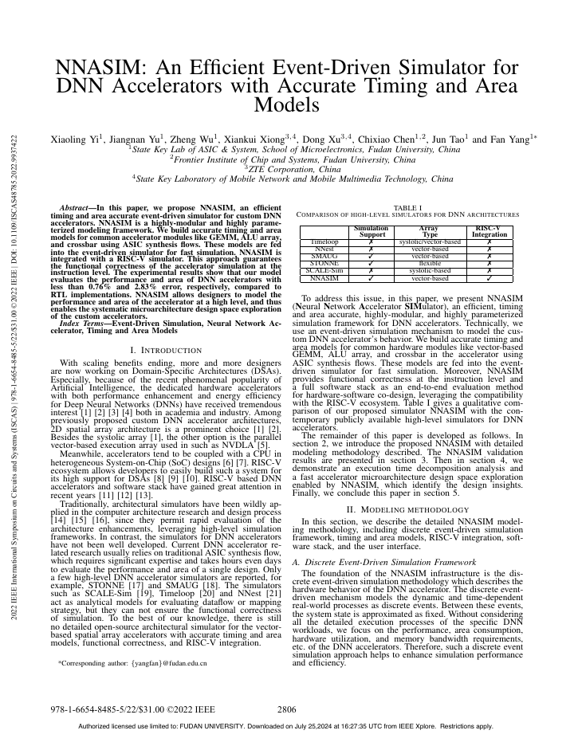

arXiv


Ph.D. Student
jyucr@connect.ust.hk
I am a Ph.D. student in Electronic and Computer Engineering at The Hong Kong University of Science and Technology, advised by Prof. Yuan Xie. My research is moving toward agentic AI infrastructure: systems that make autonomous LLM agents reliable, efficient, hardware-aware, and deployable on real AI clusters.
I work across LLM and MoE serving, GPU/CPU-GPU runtime systems, memory-centric AI accelerators, retrieval-augmented generation on edge devices, and hardware-software co-design for sparse and irregular AI workloads. Before joining HKUST, I received my M.S. and B.S. in Microelectronics from Fudan University.
I am open to collaboration on agent runtime systems, AI infrastructure, and efficient model serving across the software-hardware boundary.
My current direction is to connect agent workloads with the lower layers that actually make them run: serving runtimes, GPU memory movement, cluster scheduling, retrieval systems, and AI hardware.
*: Equal contribution. Local PDF buttons point to full-text files in this repository when an open version is available.


IEEE/ACM International Conference on Computer-Aided Design (ICCAD), 2026. Accepted

ESSERC, 2026. Accepted







Motto: With effort, what you wish for can come true.
I enjoy running, hiking, and building small tools that make research work less fragile.